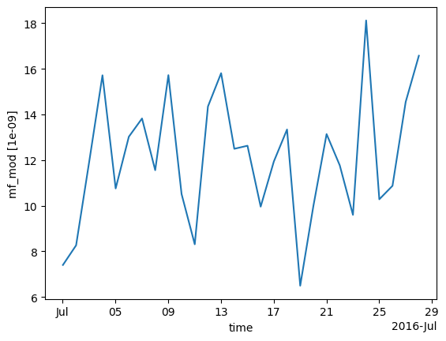
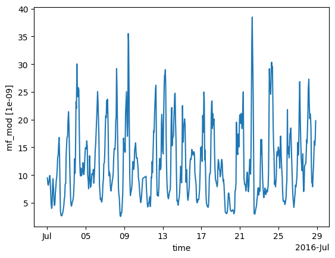
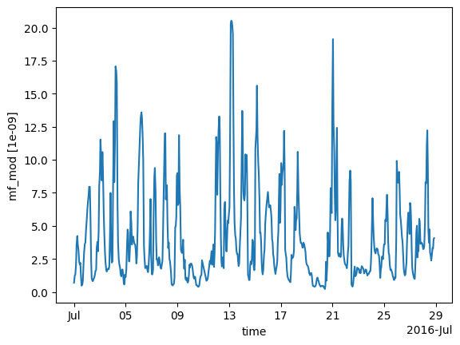

Comparing observations to emissions¶
In this tutorial, we will see how to combine observation data and
acillary data into a ModelScenario, which can compute modelled
outputs based on ancillary data, and compare these modelled outputs
to observed measurements.
This tutorial builds on the tutorials Adding observation data and Adding ancillary spatial data.
Note
Plots created within this tutorial may not show up on the online documentation version of this notebook.
Using the tutorial object store¶
As in the previous tutorials, we will use the tutorial object store to avoid cluttering your personal object store.
from openghg.tutorial import use_tutorial_store
use_tutorial_store()
Omit this step if you want to analyse data in your local object store. (This data needs to be added following the instructions in the previous tutorials.)
1. Loading data sources into the object store¶
We begin by adding observation, footprint, flux, and (optionally) boundary conditions data to the object store. See Adding ancillary spatial data for more details on these inputs. This data relates to Tacolneston (TAC) site within the DECC network and the area around Europe (EUROPE domain).
We’ll use some helper functions from the openghg.tutorial submodule
to retrieve raw data in the expected format:
from openghg.tutorial import populate_surface_data, populate_footprint_inert, populate_flux_ch4, populate_bc_ch4
populate_surface_data()
populate_footprint_inert()
populate_flux_ch4()
populate_bc_ch4()
2. Creating a model scenario¶
With this ancillary data, we can start to make comparisons between model
data, such as bottom-up inventories, and our observations. This analysis
is based around a ModelScenario object which can be created to link
together observation, footprint, flux / emissions data and boundary conditions
data.
Above we loaded observation data from the Tacolneston site into the object store. We also added both an associated footprint (sensitivity map) and an anthropogenic emissions map for a domain defined over Europe.
To access and link this data we can set up our ModelScenario
instance using a similar set of keywords. In this case we have also
limited ourselves to a date range:
from openghg.analyse import ModelScenario
species="ch4"
site="tac"
domain="EUROPE"
height="100m"
source_waste = "waste"
start_date = "2016-07-01"
end_date = "2016-08-01"
scenario = ModelScenario(site=site,
inlet=height,
domain=domain,
species=species,
source=source_waste,
start_date=start_date,
end_date=end_date)
Using these keywords, this will search the object store and attempt to
collect and attach observation, footprint, flux and boundary conditions
data. This collected data will be attached to your created
ModelScenario. For the observations this will be stored as the
ModelScenario.obs attribute. This will be an ObsData object
which contains metadata and data for your observations:
scenario.obs
ObsData(metadata={'site': 'tac', 'instrument': 'picarro', 'sampling_period': '3600.0', 'inlet': '100m', ...}, uuid=61bc8df6-386b-431b-9199-6bdb3db1f201)
To access the undelying xarray Dataset containing the observation data
use ModelScenario.obs.data:
scenario.obs.data
<xarray.Dataset> Size: 19kB
Dimensions: (time: 608)
Coordinates:
* time (time) datetime64[ns] 5kB 2016-07-01T00:18:58 ...
Data variables:
mf (time) float64 5kB dask.array<chunksize=(608,), meta=np.ndarray>
mf_number_of_observations (time) int64 5kB dask.array<chunksize=(608,), meta=np.ndarray>
mf_variability (time) float64 5kB dask.array<chunksize=(608,), meta=np.ndarray>
Attributes: (12/27)
Conventions: CF-1.8
comment: Cavity ring-down measurements. Output from GCWerks
conditions_of_use: Ensure that you contact the data owner at the outs...
data_owner: Simon O'Doherty
data_owner_email: s.odoherty@bristol.ac.uk
data_source: internal
... ...
station_height_masl: 64
station_latitude: 52.51882
station_long_name: Tacolneston Tower, UK
station_longitude: 1.1387
type: air
scale: WMO-X2004AThe ModelScenario.footprint attribute contains the linked
FootprintData (again, use .data to extract xarray Dataset):
scenario.footprint
FootprintData(metadata={'site': 'tac', 'domain': 'europe', 'model': 'name', 'inlet': '100m', ...}, uuid=2d79611a-3f6a-4e31-a620-d47b38fc6082)
And the ModelScenario.fluxes attribute can be used to access the
FluxData. Note that for ModelScenario.fluxes this can contain
multiple flux sources and so this is stored as a dictionary linked to
the source name:
scenario.fluxes
{'waste': FluxData(metadata={'raw file used': '/home/cv18710/work_shared/gridded_fluxes/ch4/ukghg/uk_flux_waste_ch4_lonlat_0.01km_2016.nc', 'species': 'ch4', 'domain': 'europe', 'source': 'waste', ...}, uuid=a0272d89-6ef2-4c72-bb11-7cc7795c3826)}
Finally, this will also search and attempt to add boundary conditions.
The ModelScenario.bc attribute can be used to access the
BoundaryConditionsData if present.
scenario.bc
BoundaryConditionsData(metadata={'date_created': '2018-11-13 09:25:29.112138', 'species': 'ch4', 'domain': 'europe', 'bc_input': 'cams', ...}, uuid=1ae9ed19-2189-4980-a326-daf95d42d687)
scenario.bc.data.attrs
{'author': 'OpenGHG Cloud',
'bc_input': 'cams',
'date_created': '2018-11-13 09:25:29.112138',
'domain': 'europe',
'end_date': '2016-07-31 23:59:59+00:00',
'max_height': 19500.0,
'max_latitude': 79.057,
'max_longitude': 39.38,
'min_height': 500.0,
'min_latitude': 10.729,
'min_longitude': -97.9,
'processed': '2026-06-11 13:40:03.263089+00:00',
'species': 'ch4',
'start_date': '2016-07-01 00:00:00+00:00',
'time_period': '1 month',
'title': 'ECMWF CAMS ch4 volume mixing ratios at domain edges'}
An interactive plot for the linked observation data can be plotted using
the ModelScenario.plot_timeseries() method:
scenario.plot_timeseries()
You can also set up your own searches and add this data directly. One benefit of this interface is to reduce searching the database if the same data needs to be used for multiple different scenarios.
from openghg.retrieve import get_obs_surface, get_footprint, get_flux, get_bc
# Extract obs results from object store
obs_results = get_obs_surface(site=site,
species=species,
inlet=height,
start_date="2016-07-01",
end_date="2016-08-01")
# Extract footprint results from object store
footprint_results = get_footprint(site=site,
domain=domain,
height=height,
start_date="2016-07-01",
end_date="2016-08-01")
# Extract flux results from object store
flux_results = get_flux(species=species,
domain=domain,
source=source_waste,
start_date="2016-01-01",
end_date="2016-12-31")
# Extract specific boundary conditions from the object store
bc_results = get_bc(species=species,
domain=domain,
bc_input="CAMS",
start_date="2016-07-01",
end_date="2016-08-01")
scenario_direct = ModelScenario(obs=obs_results, footprint=footprint_results, flux=flux_results, bc=bc_results)
Note
You can create your own input objects directly and add these in the
same way. This allows you to bypass the object store for experimental
examples. At the moment these inputs need to be ObsData,
FootprintData, FluxData or BoundaryConditionsData objects,
which can be created using classes from openghg.dataobjects.
Simpler inputs will be made available.
3. Comparing data sources¶
Once your ModelScenario has been created you can then start to use
the linked data to compare outputs. For example we may want to calculate
modelled observations at our site based on our linked footprint and
emissions data:
modelled_observations = scenario.calc_modelled_obs()
This could then be plotted directly using the xarray plotting methods:
modelled_observations.mf_mod.plot() # Can plot using xarray plotting methods
[<matplotlib.lines.Line2D at 0x7f778a29c4d0>]

The modelled baseline, based on the linked boundary conditions, can also be calculated in a similar way:
modelled_baseline = scenario.calc_modelled_baseline()
modelled_baseline.bc_mod.plot() # Can plot using xarray plotting methods
[<matplotlib.lines.Line2D at 0x7f7773ba2f90>]

To compare these modelled observations to the observations
themselves, the ModelScenario.plot_comparison() method can be used.
This will stack the modelled observations and the modelled baseline by
default to allow comparison:
scenario.plot_comparison()
The ModelScenario.footprints_data_merge() method can also be used to
created a combined output, with all aligned data stored directly within
an xarray.Dataset:
combined_dataset = scenario.footprints_data_merge()
combined_dataset
<xarray.Dataset> Size: 412MB
Dimensions: (time: 608, lat: 293, lon: 391,
height: 20)
Coordinates:
* time (time) datetime64[ns] 5kB 2016-07-01...
* height (height) float32 80B 500.0 ... 1.95e+04
* lat (lat) float64 2kB 10.73 10.96 ... 79.06
* lon (lon) float64 3kB -97.9 ... 39.38
Data variables: (12/22)
mf (time) float64 5kB dask.array<chunksize=(608,), meta=np.ndarray>
mf_number_of_observations (time) float64 5kB dask.array<chunksize=(608,), meta=np.ndarray>
mf_variability (time) float64 5kB dask.array<chunksize=(608,), meta=np.ndarray>
air_pressure (time) float32 2kB dask.array<chunksize=(335,), meta=np.ndarray>
air_temperature (time) float32 2kB dask.array<chunksize=(335,), meta=np.ndarray>
atmosphere_boundary_layer_thickness (time) float32 2kB dask.array<chunksize=(335,), meta=np.ndarray>
... ...
release_lat (time) float32 2kB dask.array<chunksize=(335,), meta=np.ndarray>
release_lon (time) float32 2kB dask.array<chunksize=(335,), meta=np.ndarray>
wind_from_direction (time) float32 2kB dask.array<chunksize=(335,), meta=np.ndarray>
wind_speed (time) float32 2kB dask.array<chunksize=(335,), meta=np.ndarray>
mf_mod (time) float32 2kB dask.array<chunksize=(335,), meta=np.ndarray>
bc_mod (time) float32 2kB dask.array<chunksize=(1,), meta=np.ndarray>
Attributes: (12/45)
Conventions: CF-1.8
comment: Cavity ring-down measurements. Output from GCWerks
conditions_of_use: Ensure that you contact the data owner at the o...
data_owner: Simon O'Doherty
data_owner_email: s.odoherty@bristol.ac.uk
data_source: internal
... ...
short_lifetime: False
start_date: 2016-07-01 00:00:00+00:00
time_period: 1 hour
time_resolved: False
variables: ['fp', 'air_temperature', 'air_pressure', 'wind...
resample_to: coarsestWhen the same calculation is being performed for multiple methods, the
last calculation is cached to allow the outputs to be produced more
efficiently. This can be disabled for large datasets by using
cache=False.
For a ModelScenario object, different analyses can be performed on
this linked data. For example if a daily average for the modelled
observations was required, we could calculate this by setting our
resample_to input to "1D" (matching available pandas time
aliases):
modelled_observations_daily = scenario.calc_modelled_obs(resample_to="1D")
modelled_observations_daily.mf_mod.plot()
[<matplotlib.lines.Line2D at 0x7f777834e750>]

Explicit resampling of the data can be also be skipped by using a resample_to input
of None. This will align the footprints to the observations by forward filling the
footprint values. Note: using platform="flask" will turn on this option as well.
modelled_observations_align = scenario.calc_modelled_obs(resample_to=None)
modelled_observations_align.mf_mod.plot()
[<matplotlib.lines.Line2D at 0x7f7773a7c080>]

To allow comparisons with multiple flux sources, more than one flux
source can be linked to your ModelScenario. This can be either be
done upon creation or can be added using the add_flux() method. When
calculating modelled observations, these flux sources will be aligned in
time and stacked to create a total output:
scenario.add_flux(species=species, domain=domain, source="energyprod")
scenario.plot_comparison()
Output for individual sources can also be created by specifying the
sources as an input:
# Included recalculate option to ensure this is updated from cached data.
modelled_obs_energyprod = scenario.calc_modelled_obs(sources="energyprod", recalculate=True)
modelled_obs_energyprod.mf_mod.plot()
[<matplotlib.lines.Line2D at 0x7f7773e88bf0>]

Plotting functions to be added for 2D / 3D data
4. Sensitivity matrices¶
To perform an inversion for a scenario, we need sensitivity matrices that combine the footprints and flux (or particle locations and boundary conditions).
We can get the “footprint x flux” matrix from calc_modelled_obs:
# use the output_fp_x_flux option, which stores the result in the fp_x_flux data variable
# we are recalculating to avoid using cached data
fp_x_flux = scenario.calc_modelled_obs(output_fp_x_flux=True, recalculate=True).fp_x_flux
fp_x_flux
<xarray.DataArray 'fp_x_flux' (lat: 293, lon: 391, time: 608)> Size: 279MB
dask.array<mul, shape=(293, 391, 608), dtype=float32, chunksize=(293, 391, 335), chunktype=numpy.ndarray>
Coordinates:
* time (time) datetime64[ns] 5kB 2016-07-01T00:18:58 ... 2016-07-28T20:...
* lat (lat) float64 2kB 10.73 10.96 11.2 11.43 ... 78.59 78.82 79.06
* lon (lon) float64 3kB -97.9 -97.55 -97.2 -96.84 ... 38.68 39.03 39.38
Attributes:
units: 1e-09To get a matrix suitable for typical inversion frameworks, we can flatten the latitude and longitude coordinates, and use the resulting values.
h = fp_x_flux.stack(latlon=["lat", "lon"]).values
(Normally you would apply basis functions to reduce the size of the matrix.)
The corresponding calculation for baseline sensitivities from boundary conditions is:
from openghg.analyse._modelled_baseline import baseline_sensitivities
bc_sensitivity = scenario.calc_modelled_baseline(output_sensitivity=True)
bc_sensitivity
<xarray.Dataset> Size: 67MB
Dimensions: (height: 20, lon: 391, time: 608, lat: 293)
Coordinates:
* time (time) datetime64[ns] 5kB 2016-07-01T00:18:58 ... 2016-07-28T20:...
* height (height) float32 80B 500.0 1.5e+03 2.5e+03 ... 1.85e+04 1.95e+04
* lon (lon) float64 3kB -97.9 -97.55 -97.2 -96.84 ... 38.68 39.03 39.38
* lat (lat) float64 2kB 10.73 10.96 11.2 11.43 ... 78.59 78.82 79.06
Data variables:
bc_n (height, lon, time) float32 19MB dask.array<chunksize=(20, 391, 1), meta=np.ndarray>
bc_e (height, lat, time) float32 14MB dask.array<chunksize=(20, 293, 1), meta=np.ndarray>
bc_s (height, lon, time) float32 19MB dask.array<chunksize=(20, 391, 1), meta=np.ndarray>
bc_w (height, lat, time) float32 14MB dask.array<chunksize=(20, 293, 1), meta=np.ndarray>
bc_mod (time) float32 2kB dask.array<chunksize=(1,), meta=np.ndarray>All of this data (except the baseline sensitivities) can be produced at once using footprints_data_merge:
combined_data = scenario.footprints_data_merge(calc_fp_x_flux=True,
calc_bc_sensitivity=True,
recalculate=True)
data_vars = ["mf", "mf_mod", "bc_mod", "fp_x_flux"] + [f"bc_{d}" for d in "nesw"]
combined_data[data_vars]
<xarray.Dataset> Size: 345MB
Dimensions: (time: 608, lat: 293, lon: 391, height: 20)
Coordinates:
* time (time) datetime64[ns] 5kB 2016-07-01T00:18:58 ... 2016-07-28T2...
* height (height) float32 80B 500.0 1.5e+03 2.5e+03 ... 1.85e+04 1.95e+04
* lat (lat) float64 2kB 10.73 10.96 11.2 11.43 ... 78.59 78.82 79.06
* lon (lon) float64 3kB -97.9 -97.55 -97.2 -96.84 ... 38.68 39.03 39.38
Data variables:
mf (time) float64 5kB dask.array<chunksize=(608,), meta=np.ndarray>
mf_mod (time) float32 2kB dask.array<chunksize=(335,), meta=np.ndarray>
bc_mod (time) float32 2kB dask.array<chunksize=(1,), meta=np.ndarray>
fp_x_flux (lat, lon, time) float32 279MB dask.array<chunksize=(293, 391, 335), meta=np.ndarray>
bc_n (height, lon, time) float32 19MB dask.array<chunksize=(20, 391, 1), meta=np.ndarray>
bc_e (height, lat, time) float32 14MB dask.array<chunksize=(20, 293, 1), meta=np.ndarray>
bc_s (height, lon, time) float32 19MB dask.array<chunksize=(20, 391, 1), meta=np.ndarray>
bc_w (height, lat, time) float32 14MB dask.array<chunksize=(20, 293, 1), meta=np.ndarray>
Attributes: (12/45)
Conventions: CF-1.8
comment: Cavity ring-down measurements. Output from GCWerks
conditions_of_use: Ensure that you contact the data owner at the o...
data_owner: Simon O'Doherty
data_owner_email: s.odoherty@bristol.ac.uk
data_source: internal
... ...
short_lifetime: False
start_date: 2016-07-01 00:00:00+00:00
time_period: 1 hour
time_resolved: False
variables: ['fp', 'air_temperature', 'air_pressure', 'wind...
resample_to: coarsestNotice that the units of all these data variables are compatible. We will say more about this in the next section.
5. Working with units¶
You can specify the units you prefer in footprints_data_merge (look at the attributes of the data variables to see their units):
combined_data = scenario.footprints_data_merge(calc_fp_x_flux=True,
calc_bc_sensitivity=True,
recalculate=True,
output_units="mol/mol")
data_vars = ["mf", "mf_mod", "bc_mod", "fp_x_flux"] + [f"bc_{d}" for d in "nesw"]
combined_data[data_vars]
<xarray.Dataset> Size: 345MB
Dimensions: (time: 608, lat: 293, lon: 391, height: 20)
Coordinates:
* time (time) datetime64[ns] 5kB 2016-07-01T00:18:58 ... 2016-07-28T2...
* height (height) float32 80B 500.0 1.5e+03 2.5e+03 ... 1.85e+04 1.95e+04
* lat (lat) float64 2kB 10.73 10.96 11.2 11.43 ... 78.59 78.82 79.06
* lon (lon) float64 3kB -97.9 -97.55 -97.2 -96.84 ... 38.68 39.03 39.38
Data variables:
mf (time) float64 5kB dask.array<chunksize=(608,), meta=np.ndarray>
mf_mod (time) float32 2kB dask.array<chunksize=(335,), meta=np.ndarray>
bc_mod (time) float32 2kB dask.array<chunksize=(1,), meta=np.ndarray>
fp_x_flux (lat, lon, time) float32 279MB dask.array<chunksize=(293, 391, 335), meta=np.ndarray>
bc_n (height, lon, time) float32 19MB dask.array<chunksize=(20, 391, 1), meta=np.ndarray>
bc_e (height, lat, time) float32 14MB dask.array<chunksize=(20, 293, 1), meta=np.ndarray>
bc_s (height, lon, time) float32 19MB dask.array<chunksize=(20, 391, 1), meta=np.ndarray>
bc_w (height, lat, time) float32 14MB dask.array<chunksize=(20, 293, 1), meta=np.ndarray>
Attributes: (12/45)
Conventions: CF-1.8
comment: Cavity ring-down measurements. Output from GCWerks
conditions_of_use: Ensure that you contact the data owner at the o...
data_owner: Simon O'Doherty
data_owner_email: s.odoherty@bristol.ac.uk
data_source: internal
... ...
short_lifetime: False
start_date: 2016-07-01 00:00:00+00:00
time_period: 1 hour
time_resolved: False
variables: ['fp', 'air_temperature', 'air_pressure', 'wind...
resample_to: coarsestBy default, the native units of the obs data are used, but here have used "mol/mol", which is equivalent to using "1".
Other options could be floats like 1e-9, or "1e-9 mol/mol", or abbreviations like "ppm", "ppb", and "ppt".
To see the units of the obs data, use scenario.units. If this returns None, then mol/mol will be used for conversions.
These outputs have aligned units, but they are not units aware. To do computations while preserving the units, you can quantify the data:
mf1 = combined_data.mf.pint.quantify()
mf2 = combined_data.mf.pint.quantify().pint.to("ppb")
# the values are very different
print(mf1.mean().values, mf2.mean().values)
# because we have quantified the DataArrays, summing them will automatically align the units
(mf1 + mf2).pint.to("ppb").mean().values
1.940388125e-06 1940.388125
array(3880.77625)
Note that alignment and reindexing quantified data can be tempermental, so it is safest to align data while it is unquantified, then quantify it to do calculations, then dequantify when you are done.
Also note that the units in calc_modelled_obs and calc_modelled_baseline have the same units conversion options as footprints_data_merge.
Further, you can use scenario.convert_units(ds) to convert the units of a dataset ds to the units stored in scenario.units.
6. Multi-sector scenarios¶
Recall that we have added two fluxes to our scenario:
scenario.fluxes
{'waste': FluxData(metadata={'raw file used': '/home/cv18710/work_shared/gridded_fluxes/ch4/ukghg/uk_flux_waste_ch4_lonlat_0.01km_2016.nc', 'species': 'ch4', 'domain': 'europe', 'source': 'waste', ...}, uuid=a0272d89-6ef2-4c72-bb11-7cc7795c3826),
'energyprod': FluxData(metadata={'raw file used': '/home/cv18710/work_shared/gridded_fluxes/ch4/ukghg/uk_flux_energyprod_ch4_lonlat_0.01km_2016.nc', 'species': 'ch4', 'domain': 'europe', 'source': 'energyprod', ...}, uuid=2563647e-7a6e-4aaf-b419-5fe0800d002f)}
By default, calc_modelled_obs and footprints_data_merge sum multiple fluxes into a single total flux.
However, we can choose to do these computations separately:
mod_obs_sectoral = scenario.calc_modelled_obs(output_fp_x_flux=True, split_by_sectors=True, recalculate=True)
mod_obs_sectoral
<xarray.Dataset> Size: 836MB
Dimensions: (time: 608, lat: 293, lon: 391, source: 2)
Coordinates:
* time (time) datetime64[ns] 5kB 2016-07-01T00:18:58 ... 201...
* lat (lat) float64 2kB 10.73 10.96 11.2 ... 78.59 78.82 79.06
* lon (lon) float64 3kB -97.9 -97.55 -97.2 ... 39.03 39.38
* source (source) object 16B 'waste' 'energyprod'
Data variables:
mf_mod (time) float32 2kB dask.array<chunksize=(335,), meta=np.ndarray>
fp_x_flux (lat, lon, time) float32 279MB dask.array<chunksize=(293, 391, 335), meta=np.ndarray>
mf_mod_sectoral (source, time) float32 5kB dask.array<chunksize=(1, 335), meta=np.ndarray>
fp_x_flux_sectoral (source, lat, lon, time) float32 557MB dask.array<chunksize=(1, 293, 391, 335), meta=np.ndarray>
Attributes:
resample_to: coarsestNow we have a sensitivity matrix with a sector dimension:
fp_x_flux_sectoral = mod_obs_sectoral.fp_x_flux_sectoral
fp_x_flux_sectoral
<xarray.DataArray 'fp_x_flux_sectoral' (source: 2, lat: 293, lon: 391, time: 608)> Size: 557MB
dask.array<mul, shape=(2, 293, 391, 608), dtype=float32, chunksize=(1, 293, 391, 335), chunktype=numpy.ndarray>
Coordinates:
* time (time) datetime64[ns] 5kB 2016-07-01T00:18:58 ... 2016-07-28T20:...
* lat (lat) float64 2kB 10.73 10.96 11.2 11.43 ... 78.59 78.82 79.06
* lon (lon) float64 3kB -97.9 -97.55 -97.2 -96.84 ... 38.68 39.03 39.38
* source (source) object 16B 'waste' 'energyprod'
Attributes:
units: 1e-09To get a matrix for use in an inversion, we can stack coordinates:
h = fp_x_flux_sectoral.stack(latlonsec=["lat", "lon", "sector"]).values
(Again, you would normally apply basis functions first.)
Cleanup¶
If you’re finished with the data in this tutorial you can cleanup the
tutorial object store using the clear_tutorial_store function.
from openghg.tutorial import clear_tutorial_store
clear_tutorial_store()